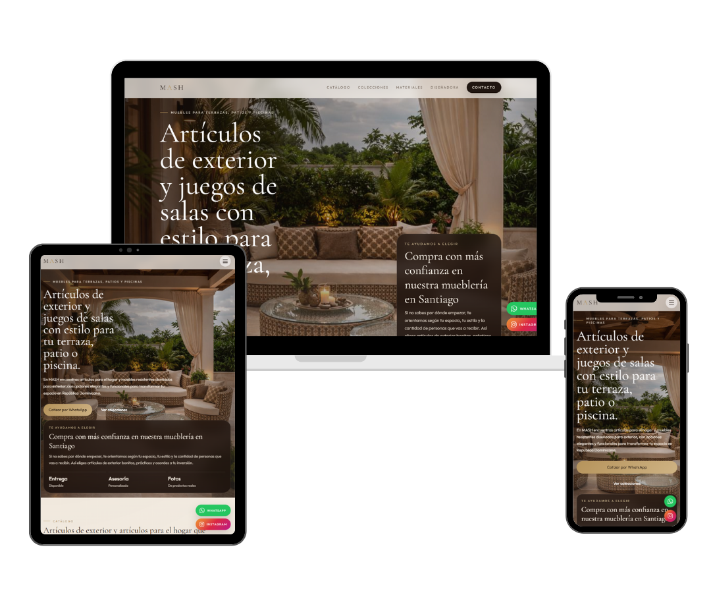
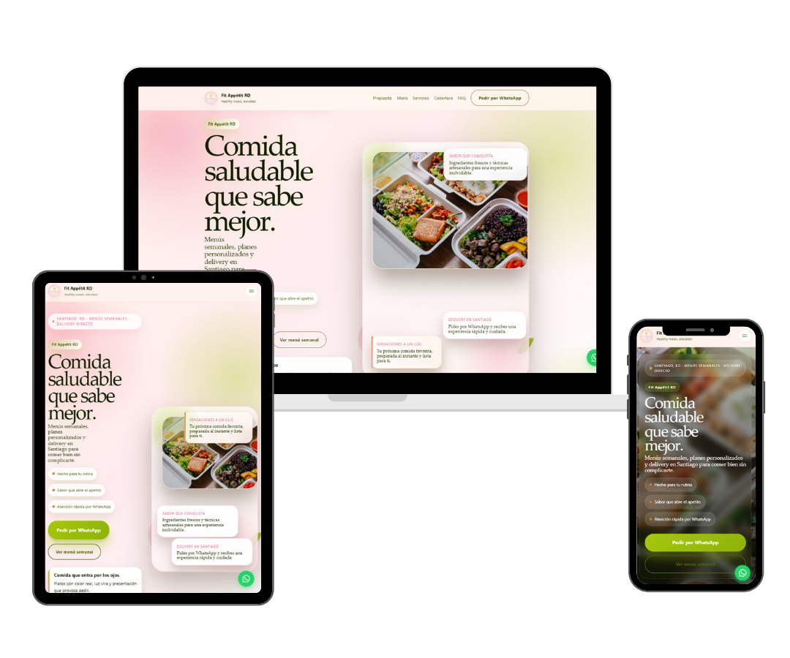

Catálogo digital con más presencia, mejor jerarquía y una estructura mucho más comercial.
Morán Studio / Diseño web estratégico
Webs premium para negocios que quieren verse mejor y vender con más claridad.
Diseño y desarrollo páginas web para marcas personales, estudios y negocios que necesitan una presencia digital más sólida, clara y fácil de elegir.
Landing pages en 4 días. Webs completas en 1 a 2 semanas. Disponible para proyectos selectos.

-
Presencia premium Para que tu marca se vea más sólida desde el primer scroll.
-
Claridad comercial Para explicar mejor lo que ofreces y facilitar la decisión.
-
Responsive cuidado Para que desktop y móvil se sientan igual de bien resueltos.
Propuesta de valor
Una web bien pensada no solo se ve mejor. También hace que tu negocio se entienda, inspire más confianza y se sienta más valioso.
Claridad para explicar lo que haces sin perder elegancia.
Una presencia visual que suba el nivel percibido de tu marca.
Una estructura que invite a escribirte, reservar o comprar.
Sobre Morán Studio
Diseño webs para negocios que ya tienen valor, pero todavía no lo comunican al nivel que merecen.
Soy Leilany Morán, diseñadora y desarrolladora web freelance. Trabajo con marcas y negocios que ya tienen valor, pero necesitan una presencia digital que lo comunique con más criterio, más nivel visual y más confianza.
Mi enfoque mezcla dirección visual, estructura comercial y una ejecución cuidada para que cada página se sienta propia, estratégica y construida con intención real.
No hago páginas genéricas
- Diseño premium
- Conversión y claridad
- Dirección visual real
Servicios
Servicios pensados para que tu web deje de verse correcta y empiece a verse realmente a la altura de tu marca.
Cada servicio responde a una necesidad distinta, pero todos comparten lo mismo: dirección visual, estructura comercial y una presencia digital que trabaje a favor de tu negocio.
01
Servicio principal
Diseño web estratégico
Webs a medida para negocios que necesitan verse más sólidos, transmitir más confianza y convertir con una presencia digital mejor resuelta.
02
Flexibilidad
Web con sistema editable
Para marcas que necesitan autonomía para actualizar contenido sin sacrificar estética, estructura ni consistencia visual.
03
Visibilidad
Optimización web y SEO base
Ajustes clave para que tu sitio se entienda mejor, cargue con más claridad y tenga una base más fuerte de visibilidad.
Proyectos destacados
Proyectos pensados para elevar la percepción de marca, no solo para verse bonitos.
Cada caso combina estética, estructura y decisión comercial para que la experiencia se vea mejor, se entienda mejor y se sienta más valiosa.
Marca / catálogo digital
MASH Oficial
Un sitio pensado para presentar producto con más deseo, más orden y una sensación de marca mucho más alta desde el primer vistazo.
Belleza / marca personal
Visage Studio
Una propuesta editorial para una marca de belleza que necesitaba verse más refinada, más aspiracional y más segura.
Ver proyectoCorporativo / energía solar
SOLARYS Ingeniería
Una presencia corporativa más clara para explicar servicios técnicos con credibilidad, orden y seriedad visual.
Ver proyecto
Gastronomía / marca comercial
Fit Appetit RD
Una web comercial más fresca y estructurada para presentar menú, beneficios y pedidos con mucha más claridad.
Ver proyectoPor qué trabajar conmigo
No diseño webs para llenar espacio online. Diseño presencia digital con criterio, claridad y una intención comercial real.
La idea no es solo que se vea bonito. Es que tu negocio se perciba mejor, se entienda más rápido y se sienta más confiable desde el primer contacto.
-
01
Estética con propósito
No separo lo visual de lo comercial. Ambas cosas trabajan juntas para que la web se vea bien y funcione mejor.
-
02
Mensaje más claro
Organizo el contenido para que la persona entienda rápido qué haces, qué ofreces y por qué debería escribirte.
-
03
Percepción de valor
La meta es que tu marca se sienta más cuidada, más profesional y mucho más creíble desde la primera impresión.
-
04
Proceso serio y cuidado
Trabajo contigo con estructura y criterio para traducir lo que tu negocio necesita en una web que realmente lo represente mejor.
Proceso
Así convierto una idea suelta en una web con dirección, presencia y estructura.
Descubrimiento
Entiendo tu negocio, tu momento y la percepción que necesitas construir.
Estrategia
Defino estructura, prioridades, CTA y la narrativa que debe sostener la experiencia.
Diseño
Construyo una dirección visual refinada, coherente con tu marca y más memorable.
Desarrollo
Llevo el diseño a una experiencia responsive, limpia y lista para rendir bien en cualquier pantalla.
Entrega y optimización
Revisamos detalles finales para que la web salga con más claridad, más nivel y más intención comercial.
Confianza
Trabajo con marcas y negocios que entienden que verse mejor online también cambia cómo se les elige.
Mi trabajo encaja especialmente bien con marcas personales, estudios, negocios de servicios, propuestas boutique y empresas que necesitan una presencia digital más cuidada, más clara y más confiable.
Marcas personales
Negocios de servicios
Belleza y bienestar
Catálogos visuales
Empresas que necesitan credibilidad
"Trabajar con Leilany fue un antes y un después para mi marca. La web logró transmitir exactamente lo que quería y ahora mis clientas entienden mejor el valor de mis servicios."
"Lo que más me gustó fue que no solo pensó en el diseño, sino en cómo mi página podía ayudarme a conectar mejor con mis clientes. Todo se sintió muy personalizado."
FAQ
Dudas frecuentes antes de empezar un proyecto web.
Esta sección está pensada para quitar fricción, aclarar expectativas y hacer que dar el siguiente paso se sienta mucho más fácil.
¿Qué tipo de páginas diseñas?
Trabajo con landing pages, webs de servicios, sitios para marcas personales, portafolios profesionales y webs comerciales para negocios que necesitan verse mejor y comunicar con más claridad.
¿Trabajas con marcas personales o negocios pequeños?
Sí. Trabajo con marcas personales, estudios y negocios en crecimiento que necesitan verse más profesionales, más claros y más confiables.
¿Cuánto tarda un proyecto?
Como referencia, una landing page puede tomar 4 días y una web más completa entre 1 y 2 semanas, según alcance y contenido.
¿También rediseñas webs?
Sí. Si tu página actual ya no representa bien tu nivel, puedo replantearla visual y estructuralmente para que se sienta más sólida, más clara y mucho más valiosa.
¿Qué necesitas de mi parte para comenzar?
Lo ideal es contar con una idea general de tu negocio, tus servicios y lo que quieres lograr. No hace falta que llegues con todo resuelto: puedo ayudarte a ordenar la dirección.
¿Puedo escribirte aunque todavía no tenga todo definido?
Claro. Muchas veces parte del trabajo consiste precisamente en ayudarte a definir qué tipo de web conviene, qué debe decir y cómo debe presentarse.
Último paso
Si tu negocio necesita verse mejor online, hagamos una web que esté a su nivel.
Si quieres una presencia digital más clara, más sólida y menos genérica, puedo ayudarte a construirla con dirección visual, estructura comercial y desarrollo cuidado.
Correo directo
leilanycristadedios@gmail.com
Si prefieres, también puedes contarme tu proyecto por correo y te respondo con una orientación inicial.